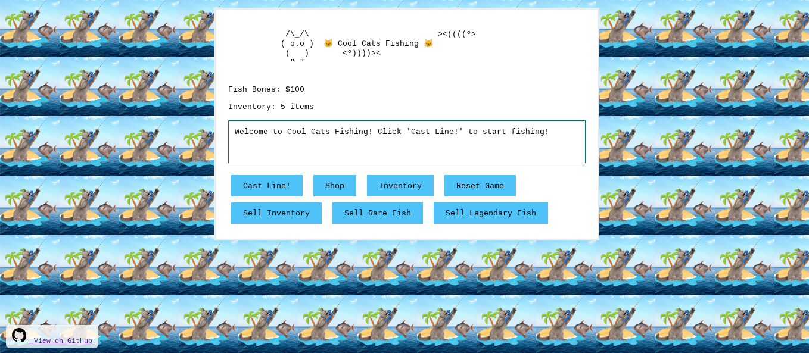

The purr-fect fishing adventure!
Cool cats fishing is a fun, open source browser-based fishing game with quick-time events and inventory management. Catch rare fish, redeem secret codes, and build your collection!
Press the correct key when prompted to catch fish. Be quick - you only have 1 second to react!
Redeem codes for special bonuses. Try "KOOLKATS", "LEGENDARY", or "RICH"!
Sell your caught fish to earn Fish Bones and build your fortune!
Fishing for Kool Kats is a standalone HTML/JavaScript game that runs in any modern browser.
To add it to your website: